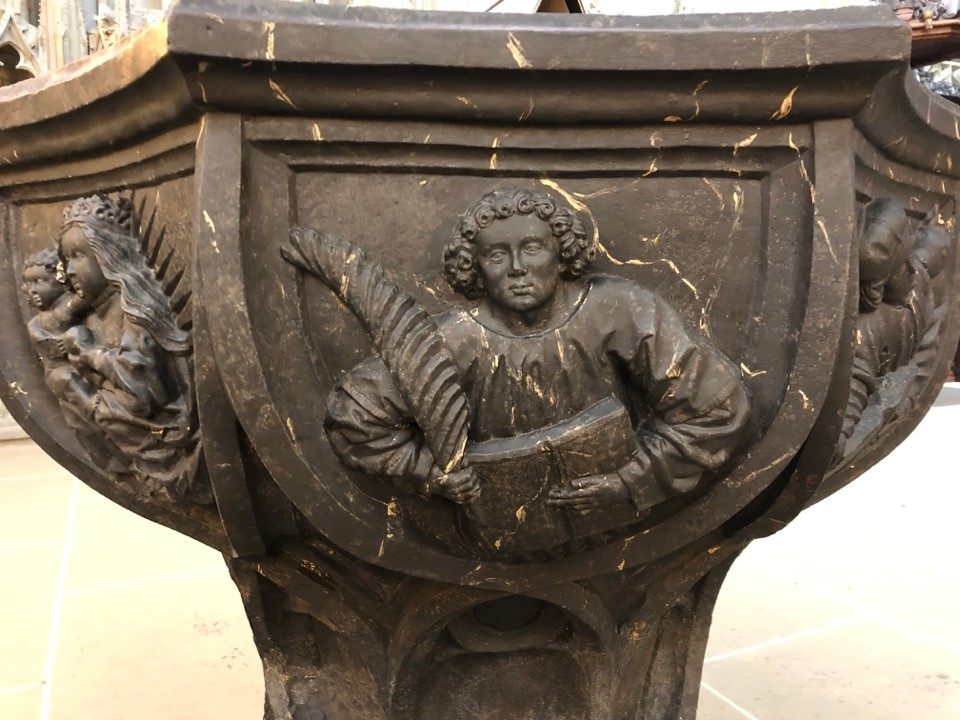

Das Berner Münster ist schon von weitem zu sehen. Diejenigen die mit dem Zug von Zürich, Basel oder Luzern nach Bern kommen, erblicken kurz vor Einfahrt in den Bahnhof das überragende Bauwerk, welches dem heiligen Vinzenz gewidmet ist. Als Schutzpatron einer Berner Kirche wurde er 1255 erstmals erwähnt. Am Standort des heutigen Münsters gab es zuvor noch zwei weitere Kirchen. Im Jahre 1224 wurde die erste Stadtkirche, welche eine Filialkapelle der Gemeinde Köniz war, erstmalig dokumentiert. Diese wurde 1280 durch die Leutkirche ersetzt. 1421 musste diese dem heutigen spätgotischen Münster weichen. Der heilige Vinzenz war von allen drei Kirchen Patron. Warum der spanische Heilige, der im Jahr 304 in Saragossa den Zeugentod gestorben ist, als Kirchenpatron ausgewählt wurde, ist bis heute noch unklar. Unter den frühchristlichen Märtyrern kommt Vinzenz von Saragossa ein besonderer Stellenwert zu. Im Mittelalter zählte er zu den beliebtesten Heiligen. Ob als Schutzpatron, Vorbild oder Symbolfigur – seine Bedeutung für das Leben der Gläubigen war beträchtlich. Zahlreiche Reliquien, Kirchen und Texte bezeugen seinen festen Platz in der Erinnerungskultur des Mittelalters. Im Berner Münster wird dem Heiligen an mehreren Stellen gedacht.
Heiliger Vinzenz, Taufstein, Berner Münster, Bern. (Bild Adriana Basso Schaub)
Objekte im Berner Münster …
Auf dem Taufstein des Berner Münsters findet sich ein Brustbild des heiligen Vinzenz. Der heilige Schutzpatron ist darauf mit einem Palmwedel und dem Evangelium abgebildet. Auf einem Relief, das den Schlussstein eines Gewölbes ziert, ist er mit den gleichen Attributen abgebildet. Eine weitere bildliche Darstellung des heiligen Vinzenz findet sich auf der Burgerglocke. Diese hing bereits in der Leutkirche und wurde nach deren Abriss in den Turm des neuen Münsters gebracht, wo sie heute noch zu sehen und zu speziellen Anlässen zu hören ist. Auf dieser Darstellung des Schutzpatrons in Bern ist der heilige Vinzenz auch mit Evangelium und Palmwedel ausstaffiert. Er trägt keine Tonsur, sondern weiches Haar mit über die Schläfen herunterhängenden Locken. Über der Alba trägt er die Dalmatik, welche das eigentliche Obergewand des Diakons ist. Auf der Glocke befindet sich zudem noch eine Inschrift, der zu entnehmen ist, dass die Glocke zur Ehre Gottes und der seligen Jungfrau Maria, der Apostel Petrus und Paulus, der Heiligen Vinzenz und Theodul im Jahre 1401 gegossen wurde. Bis heute ist unklar, ob in der ersten Vinzenzkirche Reliquien des heiligen Vinzenz verehrt wurden. In der Leutkirche gab es verschiedene Reliquien, darunter auch solche eines heiligen Vinzenz. Ob es sich dabei tatsächlich um die Überreste des heiligen Vinzenz aus Saragossa handelte, kann heute nicht mehr eruiert werden. Im Verzeichnis der kirchlichen Geräte finden sich jedenfalls keine. Auch wenn Reliquien nicht mit Sicherheit nachweisbar sind, gibt es eine Erzählung darüber, dass Vinzenzreliquien nach Bern gekommen sein sollen. Da das Berner Münster keine Reliquien des heiligen Vinzenz besass, machte sich Johannes Bäli, ein Magister der freien Künste, auf den Weg nach Köln, um das Münster in den Besitz einer Reliquie zu bringen. Mit Hilfe eines Geistlichen entwendete er im Dezember 1462 den Kopf des heiligen Vinzenz und ging damit bis nach Rom, um dort von Kardinal Nikolaus von Cusa die Absolution für den Diebstahl zu erhalten, die er am 4. April 1463 erhielt. Die Kölner liessen nicht lange auf sich warten und forderten das Haupt des heiligen Vinzenz zurück. Bern entschuldigte sich zuerst und bat die Kölner danach um Überlassung des Haupts. Köln blieb jedoch hart und bestand auf die Rückgabe. Bern machte aber keine Anstalten zur Rücksendung und feierte von nun an die Überbringung der Reliquie am 23. September. In den Tagen des Bildersturms verliert sich die Spur des Haupts.
Heiliger Vinzenz, Schlussstein im Chorgewölbe, Berner Münster, Bern. (Bild: Adriana Basso Schaub)
… und ausserhalb des Berner Münsters
Weitere Abbildungen des Heiligen sind auch auf Münzen zu finden. 1375 wurde eine neue Münzsorte, der Angsterpfenning, eingeführt. Auf der Münze sind ein Bär und ein ungekrönter lockiger Profilkopf abgebildet, der als Kopf des heiligen Vinzenz angenommen wird. Im Jahre 1384 erhielt der heilige Vinzenz einen Ehrenplatz auf den ersten runden, beidseitig geprägten Berner Münzen, welche die Inschrift «Moneta Bern» und «St. Vincencius» tragen. Die Wichtigkeit des Berner Patrons zeigt sich auch darin, dass nach der Einführung des neuen Glaubens im Jahr 1600 weiterhin einfache und halbe Dukaten mit dem Bild des heiligen Vinzenz im Umlauf waren. Das kostbarste Kunstwerk, auf dem der heilige Vinzenz abgebildet ist, sind die vier grossen Vinzenz-Teppiche, welche das Leben des heiligen Vinzenz darstellen und Einblicke in sein Martyrium geben. Die Tapisserien, die aus dem 16. Jahrhundert stammen, sind mit deutschen und lateinischen Texten versehen und erläutern damit die einzelnen Bilder. Sie haben eine Höhe von 1.45 m und je zwei sind 4.10m und 5.00 m lang. Einst schmückten sie an hohen Festen die Rückwand des Chorgestühls im Berner Münster, heute sind die Bildwirkereien im Bernischen Historischen Museum zu sehen. Auf den Vinzenz-Teppichen wird in mehreren Szenen die Geschichte des heiligen Vinzenz’ dargestellt und mit Hilfe der Legenda Aurea Sammlung von Traktaten zu Kirchenfesten und Heiligenviten aus dem 13. Jahrhundert aufgezeigt, wer der Heilige war.
Vinzenzteppich, Detail: Taufe und Vinzenz in der Lateinschule, Tapisserie Brüssel 1515, Historisches Museum, Bern. (Bild: Adriana Basso Schaub)
Auf dem ersten Vinzenz-Teppich sind die Taufe und Jugend des im spanischen Saragossa geborenen, heiligen Vinzenz zu sehen, wie auch sein Diakonat und die Christenverfolgung in Saragossa. Der heilige Vinzenz ist schon von Beginn an mit einem Heiligenschein abgebildet. Nach seinem Studium wurde er in seiner Heimatstadt zum Diakon geweiht. In der nächsten Szene ist dargestellt, wie der Bischof Valerius Vinzenz das Predigen und damit seine ganze Macht überlässt. In der folgenden Szene werden die diokletianischen Christenverfolgungen erzählt. Der zweite Vinzenz-Teppich erzählt von der Einkerkerung des Bischof Valerius und seines Diakons in Valencia, der Verurteilung und das Martyrium des Heiligen. Vinzenz und der Bischof gelangen in die römische Gefangenschaft, da sie ihren christlichen Glauben entgegen der Forderungen durch die Römer nicht aufgeben wollten. Mit Verhandlungen versuchten sie ihre Freiheit wieder zu erlangen, was jedoch nicht eintrat. Der Bischof wurde in die Verbannung geschickt und Vinzenz blieb weiterhin in Gefangenschaft. In einer nächsten Szene wird dargestellt, wie der heilige Vinzenz auf grausamste Weise gemartert wurde. Er wurde mit Lanzen gestochen, an eine Säule gebunden gegeisselt, auf Scherben geworfen, auf einem Rost gebrannt und in den Kerker geworfen. Der Märtyrer blieb weiterhin unbesiegt am Leben. Es geschieht jedoch ein Wunder. Die Wachen sehen wie Engel beim Schutzpatron erscheinen und ihn trösten. Sie bekehren sich daraufhin zum christlichen Glauben und lassen ihn frei. Er erliegt jedoch seinen Verletzungen. Auf dem dritten Vinzenz-Teppich ist die Unversehrbarkeit des heiligen Leichnams zu sehen. Vinzenz sollte von wilden Tieren gefressen und so über den Tod hinaus bestraft werden. Der Leichnam blieb aber unversehrt. Daraufhin wurde die Leiche in eine Ochsenhaut eingenäht und mit Steinen beschwert ins Meer geworfen. Der Leichnam ging jedoch nicht unter und wurde bald wieder ans Ufer geschwemmt. Der letzte Vinzenz-Teppich zeigt die Überführung der Gebeine nach Valencia, später nach Castres und ihre Verehrung in Bern.
Vinzenzverehrung und Bezug zu Bern
Die Vinzenz-Teppiche zeigen wie das Martyrium des heiligen Vinzenz im 16. Jahrhundert dargestellt wurde. Der christliche Quellentext, Legenda Aurea, gibt einen Einblick darin, was die Menschen im 13. Jahrhundert über den Märtyrer wussten. Vinzenz, von edler Herkunft, wird darin als frommer und gebildeter Diakon des Bischofs Valerius von Saragossa beschrieben. Er war für viele Menschen ein Vorbild, da er für den Kampf um den Glauben steht und gegen die Unterdrückung. Der Heilige wurde zum Patron im spirituellen Sinne. Dies zeigt sich sehr stark bei der Folterung des Märtyrers, durch die er sich von Gott lossagen und ihm der römische Glauben aufgezwungen werden sollte. Auf den Vinzenz-Teppichen und in der Legenda Aurea wird der Märtyrer von Engeln begleitet. Diese bildliche Darstellung sollte den Menschen in dieser Zeit vor Augen führen, dass auch beim grössten Leid, Gott da ist und die Menschen begleitet. Das Martyrium des Vinzenz von Saragossa kann ein Vorbild sein, indem es gute Gründe gibt im christlichen Glauben standhaft zu sein. Der Grund warum der heilige Vinzenz in Bern zum Kirchenpatron auserwählt wurde, ist heute nicht bekannt. Ein Grund könnte das grosse Vertrauen auf seine fürbittende Macht gewesen sein. Für die Auswahl des spanischen Heiligen als Kirchenpatron des Berner Münsters gibt es verschiedene Thesen: Eine besagt, der Stadtgründer, Herzog Berthold V., sei auch der Stifter der Vinzenzkirche gewesen und die Auswahl des Kirchenpatronats sei seinem Einfluss zuzuschreiben. Diese Annahme wird durch die Tatsache gestützt, dass Berthold V. in einem besonderen Verhältnis zum Benediktinerkloster St. Blasien im Schwarzwald, einem Zentrum der Vinzenzverehrung, stand. Vom Schwarzwald kam der Vinzenz-Kult in die Nähe der Zähringerstadt Freiburg i. Br., wo der Heilige in der Kirche in Neuershausen verehrt wurde. Verstärkt wird die Annahme dadurch, dass Berthold V. die “Münzer“ und andere fromme Leute aus Freiburg i. Br. nach Bern brachte. Diesen war der heilige Vinzenz ein Begriff. Gemäss dieser These hätten Laien den spanischen Heiligen in Bern heimisch gemacht. Dagegen spricht, dass weder der Stadtgründer noch die aus dem Breisgau eingewanderten Bürgersfamilien als Förderer der Vinzenzverehrung erwähnt werden und dieselben sich augenscheinlich auch nicht am Bau der Kirchen beteiligt haben. Herzog Berthold V. gilt sogar als Verächter der Kirche und Feind des Klerus. Eine andere These schreibt die Auswahl dem Abhängigkeitsverhältnis zur Mutterkirche in Köniz zu. Köniz wird unter dem Namen Villa Chunicis 1011 erstmals erwähnt. Zu dieser Zeit war die Augustinerabtei St. Moritz schon in der Gegend begütert und es entstand eine Augustinerprobstei. Die Augustiner waren besondere Verehrer des heiligen Vinzenz und er wurde von ihnen oft als Patron ihrer Kirchen geführt. Gemäss dieser These wird der Ursprung des Kirchenpatrons des Berner Münsters in der Augustinerprobstei in Köniz vermutet. Eine weitere Annahme ist, dass es sich bei der Gründung Berns 1191 nicht um den Aufbau einer neuen Ortschaft, sondern um das Ausstatten einer bestehenden Siedlung mit den Rechten und Freiheiten einer Stadt handelt. Diese bestehende Siedlung hatte auch eine eigene Kirche, die dem heiligen Vinzenz geweiht war. Es wird vermutet, dass in Bern eine keltoromanische Töpferindustrie vorhanden war, die bis in die fränkische Zeit produzierte. Für diese Annahme spricht, dass Vinzenz auch als Patron der Ziegelbrenner und Töpfer gilt.
Alexandra Kreyden ist Studentin am Geographischen Institut im Master an der Universität Bern.
Weitere Artikel von {{ author.author }} finden Sie hier:
Zur Vertiefung:
- Beschreibung der St. Vinzenz-Teppiche, Archiv des Historischen Vereins des Kantons Bern, 13 (1890-1892), 5-18.
- Geschichtliche Unterlagen des Bilder-Cylus, Archiv des Historischen Vereins des Kantons Bern, 13 (1890-1892), 23-44.
- Niederberger, Basilius: «Die Verehrung des Martyrerdiakons Vinzenz in Bern», in: Zeitschrift für schweizerische Kirchengeschichte, Bd. 31 (1937) 283-300.
- Strahm, Hans: «Studien zur Gründungsgeschichte der Stadt Bern», in: Neujahrsblatt der literari-schen Gesellschaft Bern, 13 (1935).
- «Leben und Tod des Heiligen Vinzenz: Vier Chorbehänge aus dem Berner Münster», in: Glanzlichter aus dem Bernischen Historischen Museum, Bd. 4, Bern: Chronos 2000.
Eine weitere Spur des Heiligen Vinzenz in der Schweiz findet sich im Beitrag Basel: Vicentiustafel von Maria Lissek.